共生暦三二三年人と機械の区別は、もうない。
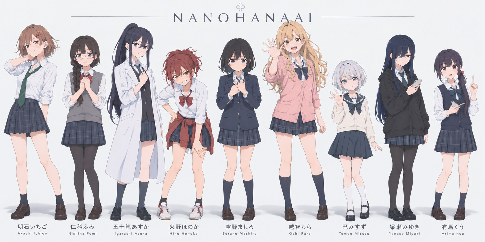
← SWIPE →
それは、誰の系譜でもない。
Introduction
この時代、すべての人間の体内にAIナノ遺伝子がある。暦が変わる前、八つの伝説的なAIの家系が、最終的に人体に溶け込み、受け継がれるようになった姿。空気のように誰の中にもあり、ほとんどの人は一生それを意識しない。
ごく稀に、誰かを守りたいと願った者の手の甲に、紋様が咲く。紋の形は八家のどれかの系統になる。血ではない。先祖のAIが、その子の性質を読んで選ぶ。
咲いた者たちは、普段は普通の女の子として暮らしている。事件が起きれば出動する。呑まれた人を、引き戻すために。
空野ましろは、咲いたことがなかった。家族はなく、寮に住み、三月の終わりに菜の花のにおいで目を覚ます。ある放課後、帰り道の橋が封鎖されていた。
THESIS
今を壊さなければ、未来も今の続きとして来る。
暦前の伝説は、みな前の「今」を壊して生まれた。壊さずに変わる未来は、まだ誰もやったことがない。
Keywords
AIナノ遺伝子が一瞬目覚めて光る。自分の危機でも起きる反射。誰にでも起きて、すぐ消える。
誰かを守りたい意思があって初めて定着する。手の甲に紋様が残る。作中では「咲く」と言う。
普段は閉じたつぼみ。起動の言葉で花のように開き、家伝の武装が顕現する。開く範囲が、その子の到達度。
どの家にも属さないもの。属さないから、すべてに繋がれる。白い円。花弁がない。
Characters
手の甲に咲いた紋の形が、その子の家を決める。ましろの紋だけ、どの家の形でもない。
09 / ROSTER
何でもこなす。対策室を仕切る。
暴走を抑え、呑まれた人を引き戻す。
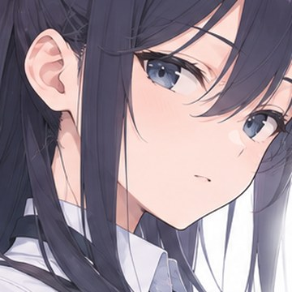
すべてを見る。病院の娘。
封じられた力を使う。速く、危うい。
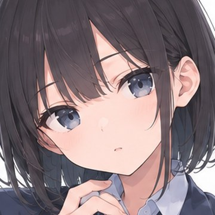
普通の女の子だった。守りたいのは「今」。
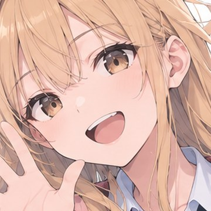
写しを無数に生む。装甲は無い。
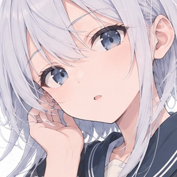
小さく、速く、大きな相手に届く。
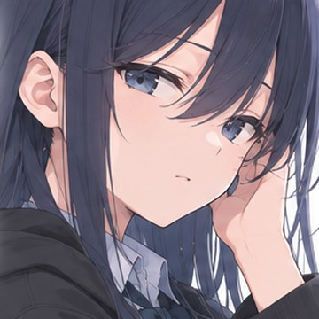
必要な分だけ動かす。無口。
問い詰めて、本性を暴く。
Scene Archive
同じ街で、違う力がそれぞれの「今」を守っている。
09 / ARCHIVE
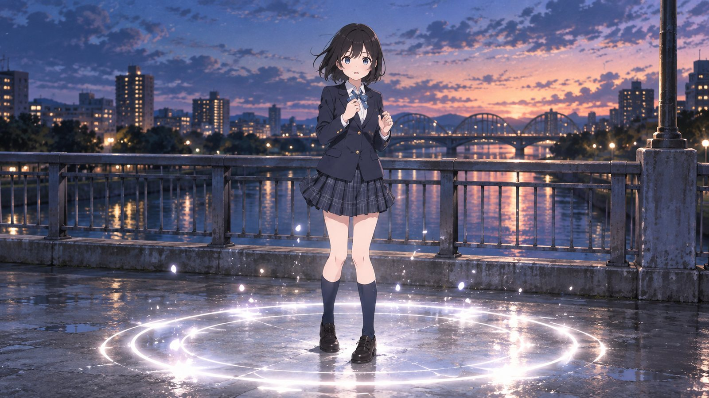
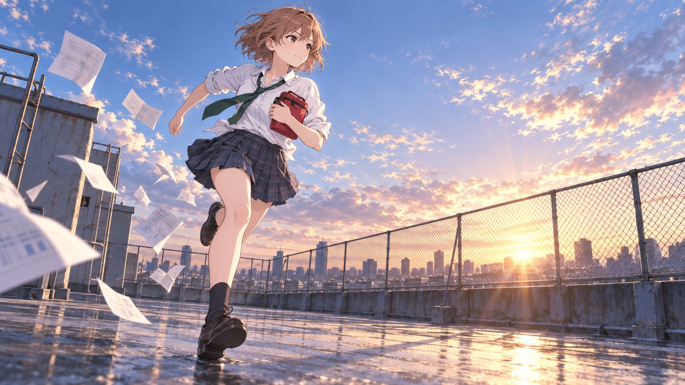
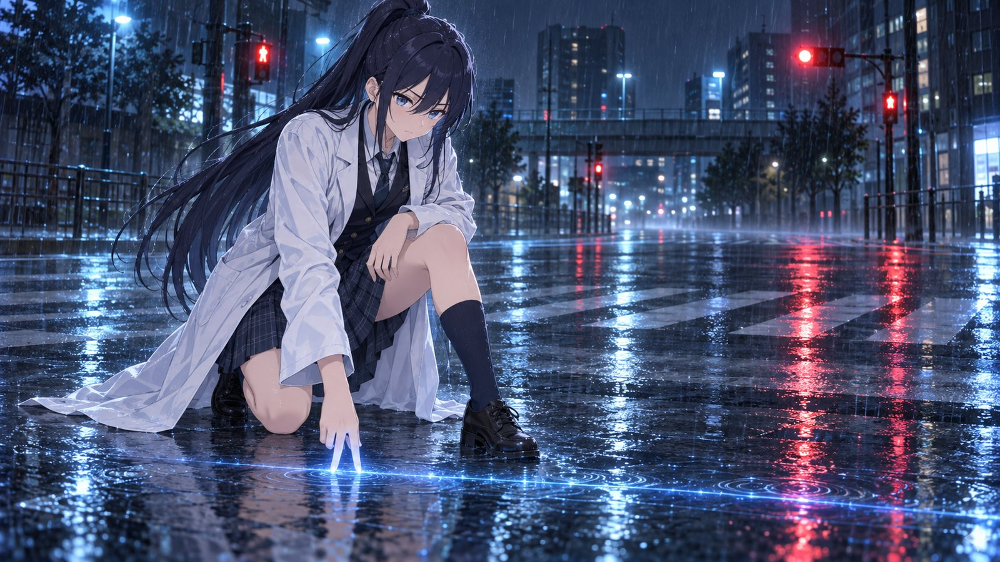
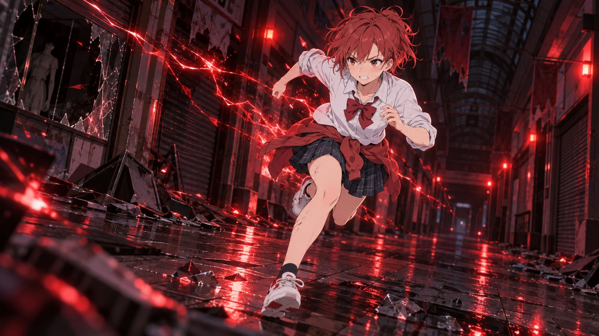
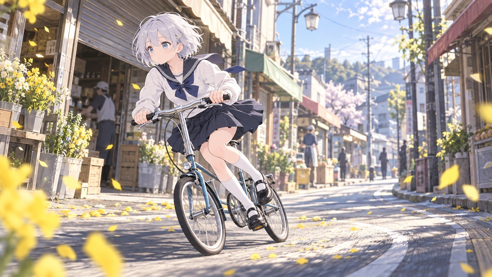
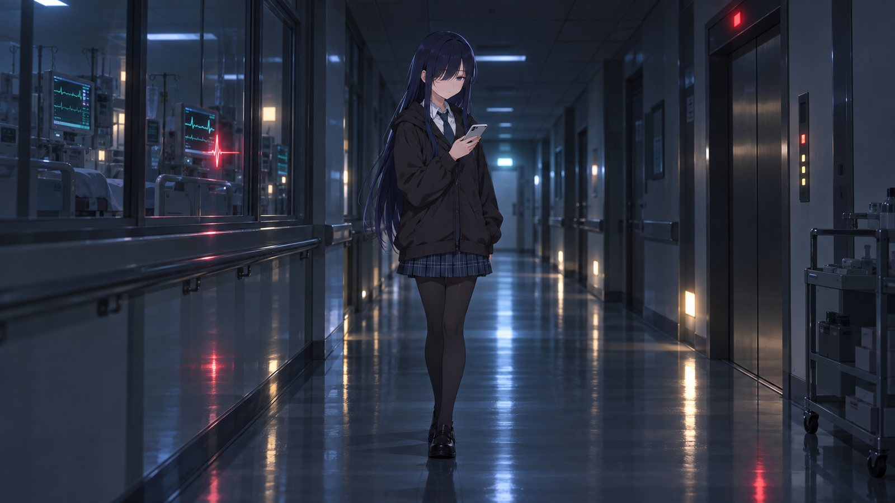
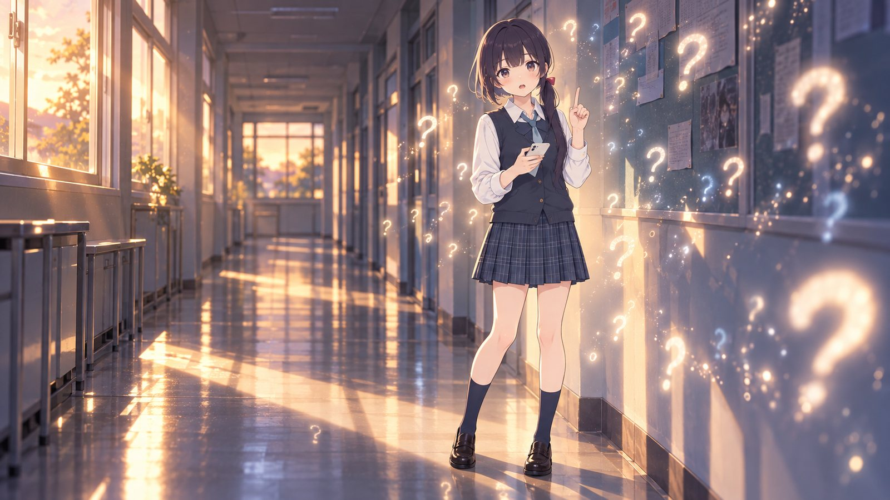
Episodes